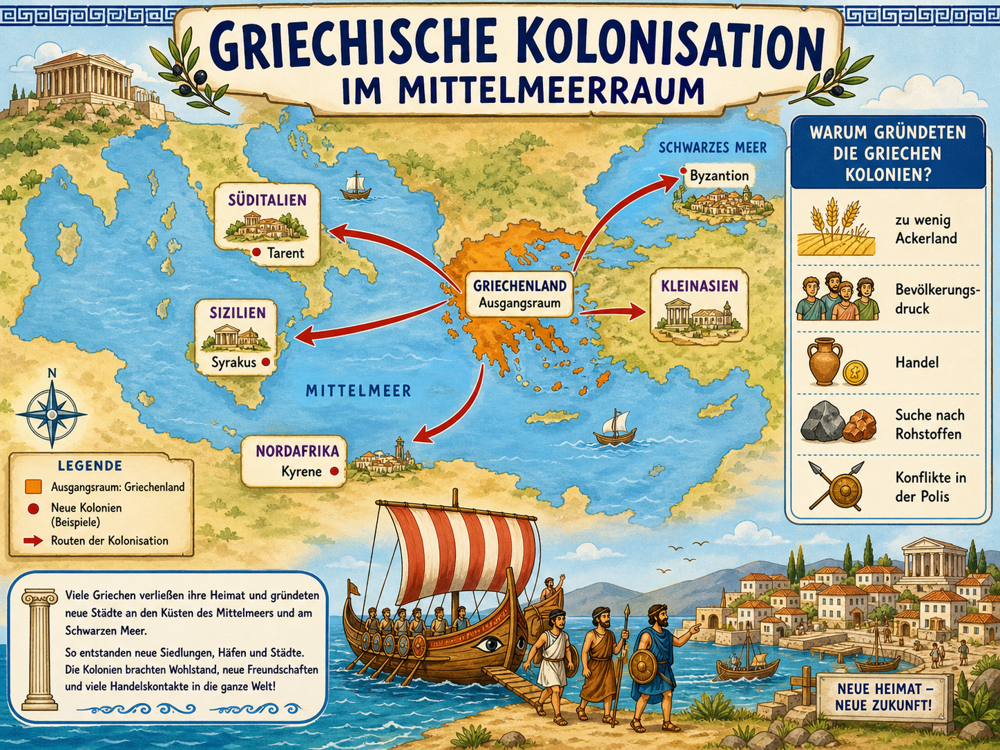

Zwischen etwa 750 und 550 v. Chr. gruendeten Griechen neue Poleis an vielen
Kuesten des Mittelmeers und am Schwarzen Meer. Du lernst, warum Menschen ihre
Heimat verliessen, wie eine neue Stadt entstand und warum daraus ein grosses
Netz aus Handel, Sprache, Ideen und Konflikten wurde.

Die Grafik zeigt den Ueberblick: Griechenland als Ausgangsraum, Gruende fuer Auswanderung und neue Siedlungen an Kuesten.
Lernidee: Kolonisation als Kette verstehen
Kolonisation ist hier kein einzelner Ort auf der Karte, sondern ein historischer
Vorgang. Wir fragen deshalb immer: Welche Probleme gab es in der Mutterpolis?
Wie wurde eine neue Siedlung gegruendet? Welche Folgen hatte das fuer Menschen
und den Mittelmeerraum?
1. Druck in der Heimat
Zu wenig Ackerland, Bevoelkerungsdruck, politische Konflikte und der Wunsch nach Handel konnten Menschen zum Aufbruch bewegen.
2. Aufbruch uebers Meer
Siedler fuhren mit Schiffen los, suchten geeignete Kuesten und gruendeten neue Poleis.
3. Neue Netzwerke
Kolonien blieben oft mit der Mutterstadt verbunden. Handel, Sprache, Religion und Ideen verbreiteten sich weiter.
Begriff klaeren: Was meint Kolonisation?
In diesem Modul meint Kolonisation die Gruendung neuer griechischer Siedlungen
und Poleis ausserhalb des griechischen Mutterlands. Diese neuen Staedte lagen
meist an Kuesten, weil Schiffe, Handel und Versorgung wichtig waren.
Wichtig: Die Gebiete waren nicht einfach leer. Dort lebten bereits andere
Menschen. Deshalb konnte es Austausch, Handel, Vermischung, aber auch Konflikte
geben. Eine gute historische Antwort nennt also nicht nur "die Griechen gingen
los", sondern erklaert auch Interessen und Folgen.
Mutterstadt
Die urspruengliche Polis, aus der Siedler kamen.
Kolonie / Apoikia
Eine neue griechische Stadt, oft politisch eigenstaendig, aber kulturell verbunden.
Mittelmeerraum
Ein Verkehrs- und Handelsraum, der Kuesten miteinander verband.
Austausch
Waren, Wissen, Schrift, Kunst, Religion und Lebensweisen konnten sich verbreiten.
Die Karte lesen
Die zweite Grafik hilft beim Kartenverstaendnis. Achte nicht nur auf Pfeile:
Suche Ausgangsraum, Zielraeume, Beispiele fuer Kolonien und die Ursachenleiste.
Gruende genauer verstehen
Klicke einen Grund an. Danach siehst du, wie aus einem Problem eine Entscheidung werden konnte.
Typischer Ablauf einer Gruendung
1. Problem
In der Mutterpolis gibt es Landmangel, Streit oder wirtschaftliche Interessen.
2. Entscheidung
Eine Gruppe wird ausgesandt. Oft spielte Religion, z. B. ein Orakel, bei Entscheidungen eine Rolle.
3. Fahrt
Schiffe bringen Menschen, Werkzeuge, Vorrat und Erwartungen an eine neue Kueste.
4. Gruendung
Eine neue Polis entsteht mit Hafen, Ackerland, Heiligtum und Regeln.
5. Folgen
Handel und Kultur breiten sich aus, aber Kontakte mit Einheimischen konnten friedlich oder konfliktgeladen sein.
Merksatz fuer die Klassenarbeit
Griechische Kolonisation bedeutet: Poleis gruendeten neue Staedte an Kuesten,
weil in der Heimat Probleme und Chancen entstanden. Dadurch wurde der
Mittelmeerraum staerker vernetzt.
Training A: Grund oder Folge?
Ordne Aussagen danach, ob sie einen Grund, einen Ablauf-Schritt oder eine Folge beschreiben.
Training B: Gruendung in Reihenfolge
Bringe den Ablauf einer Koloniegruendung in die richtige Reihenfolge. Nutze Zahlen von 1 bis 5.
Training C: Karten- und Begriffsarbeit
Verbinde Kartenbeispiele und Fachbegriffe mit der passenden Erklaerung.
Geschichts-Test
10 Fragen zu Gruenden, Ablauf, Karte, Begriffen und Folgen der griechischen Kolonisation.